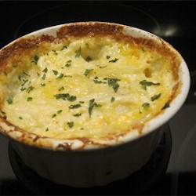

Double Cheesy Au Gratin Potatoes

Even the kids will love this cheesy, chewy potato dish.
Ingredients:
- 4 large baking potatoes, peeled and sliced thin
- 1 quart heavy cream
- 1/2 cup grated Parmesan cheese
- salt and pepper to taste
- 1 cup shredded sharp Cheddar cheese
Directions:
- Preheat oven to 350 degrees F (175 degrees C). Grease a 2 qt. baking dish.
- Layer potato slices in prepared baking dish. Pour cream over potatoes; sprinkle with Parmesan cheese. Season potatoes with salt and pepper.
- Bake in preheated oven until potatoes are soft, about 1 hour.
- Remove from oven; gently stir potatoes. Sprinkle with the Cheddar cheese; cover and let rest until cheese is melted, about 5 minutes.